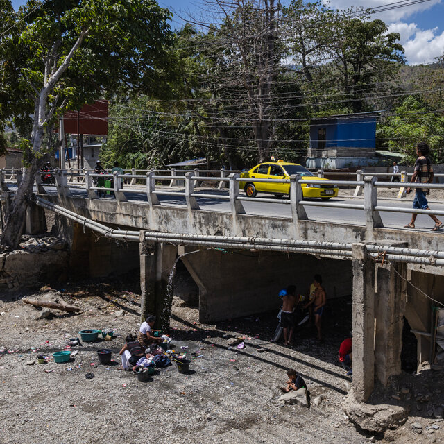
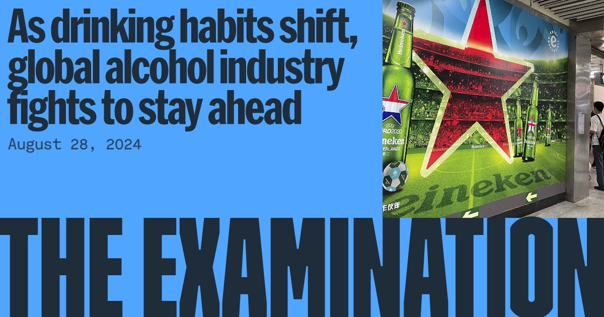
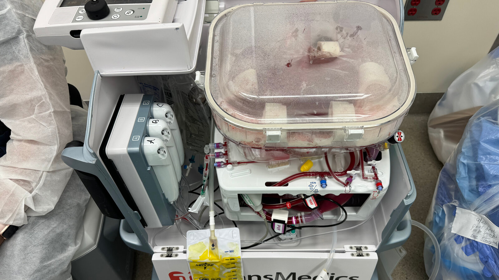
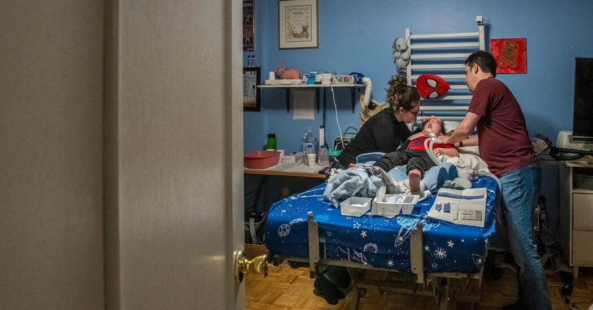
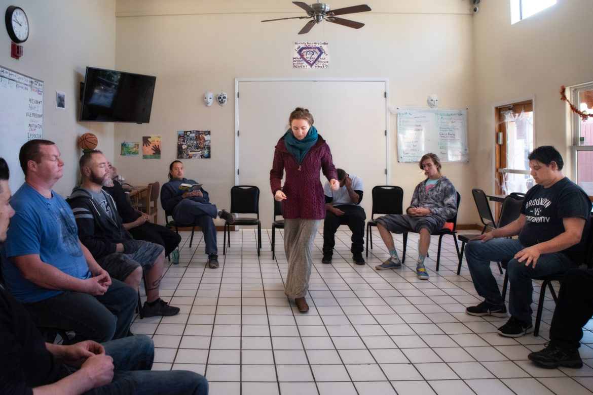
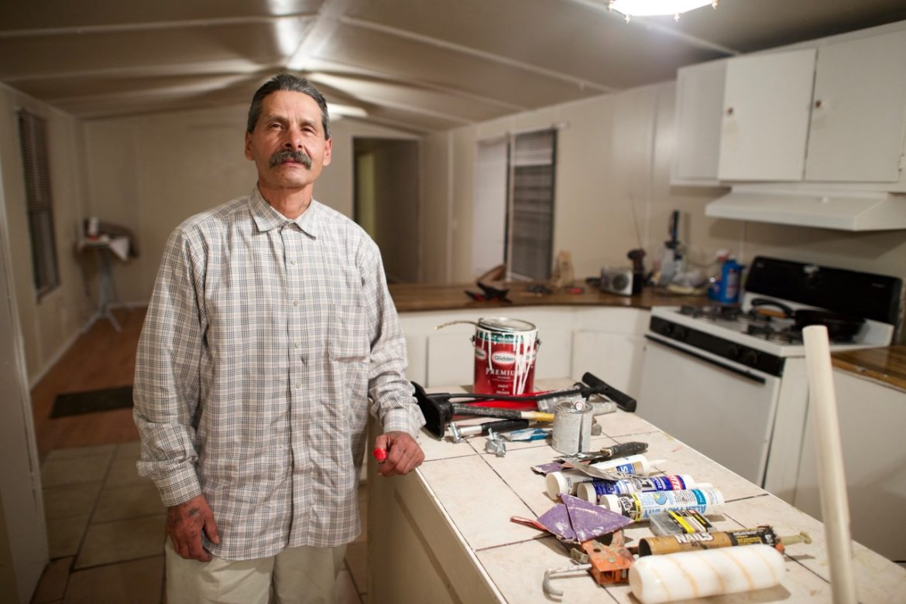
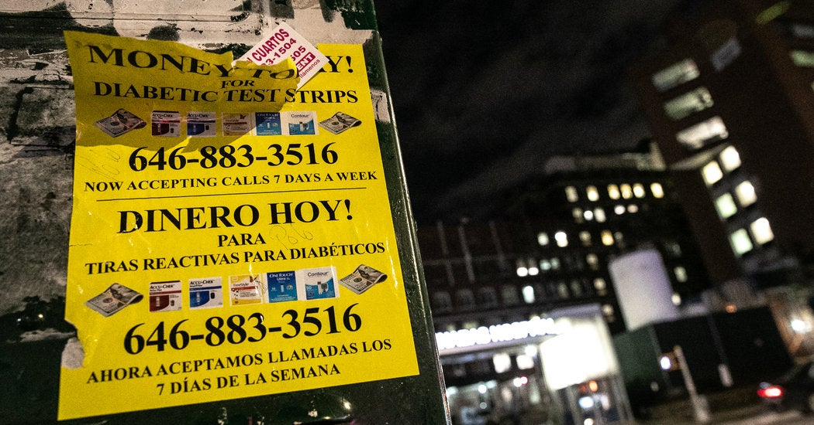
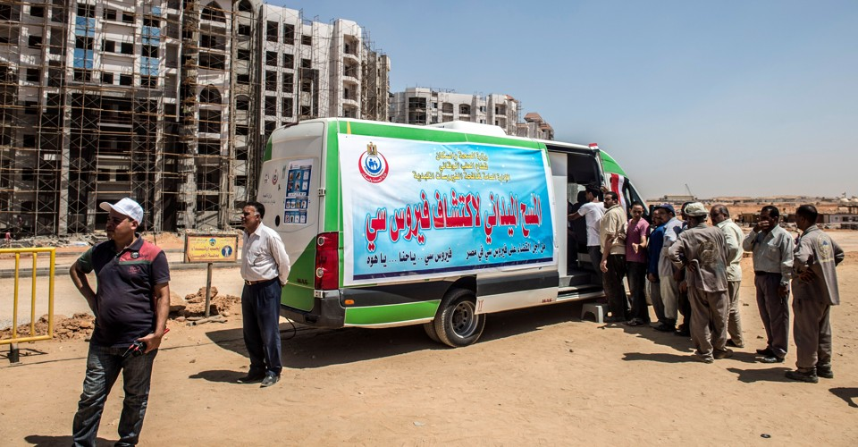
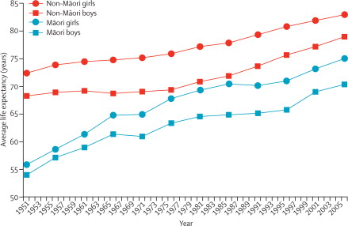

A new lifeline helps inmates transition to life outside
Medicaid is now paying for health care in jails and prisons, helping smooth inmates' return to the community. Corrections and law enforcement officials say they're all for it.
Medicaid is now paying for health care in jails and prisons, helping smooth inmates' return to the community. Corrections and law enforcement officials say they're all for it.
The U.S. Agency for International Development has been a major supporter of global agriculture research. Now many studies are being scuttled or scaled back.
Responding to doctors' concerns that New Mexico's malpractice system is making it hard to practice medicine, leading lawmakers hope to rein in tactics lawyers use to win awards for injured patients.
Would-be gun owners seeking a concealed carry permit are required to take a safety training course, but with few rules on how they are taught, gun aficionados have stepped in to run them.

A U.S. aid agency had committed hundreds of millions of dollars to the project, which could help provide clean water. Now its board wants to pull out of the agreement.
Cuts to international aid are risking the development of Asia's youngest democracy. Ted Alcorn reports from Dili.
The festival has billionaire devotees, more than 100 offshoot events and a cult following. So why is the organization behind it struggling to stay afloat?
In a cancer hotbed, hospitals upped their game and increased screening rates.
Pesticides are a leading means of suicide. The tiny nation of Suriname is working to restrict access to one of the most common and dangerous ones.
After lawmakers required high schools to start no earlier than 8:30 a.m., school administrators complained that it was unworkable. Last month, Gov. Ron DeSantis signed a repeal.
As victims await closure and defendants languish behind bars, New York City's courts struggle to overcome a culture of delay ' and the future of the project to close Rikers Island for good hangs in the balance.
James Ketcherside approached the bushes behind the Las Cruces fire station where the woman had been spending nights, bracing for resistance but determined to try.
Ireland became the first country to require cancer warnings on alcohol; others are weighing it.
The first cars arrived before dawn. By 9 a.m., vehicles snaked through the food distribution event at the state fairgrounds in Albuquerque. It was a week before Christmas, and thousands of families would come for groceri
Alcohol is an overlooked factor in many shootings. Baltimore has tried harder than any other American city to disrupt the link.

THE EXAMINATIONAlcohol companies are targeting new markets and dodging regulation worldwide while excess drinking causes millions of deaths each year.
After a cancer diagnosis, it's one of the most important decisions you'll make.
When spring turns to summer and warm weather lures more people outside, skin cancer may be at most a distant concern. But experts said it's important to take the risk seriously.
Ireland will require them starting in 2026, and there are nascent efforts elsewhere to add more explicit labeling about the health risks of drinking.

Perfusion keeps a donated organ alive outside the body, giving surgeons extra time and increasing the number of transplants possible.
Despite an arsenal of drugs, many Americans are still unaware of their infections until it's too late. A Biden initiative languishes without Congressional approval.
Now that federal pandemic-era funds are shrinking, states like Indiana are ending or curtailing programs that finance home care by relatives of seriously ill children and adults.
Weapons-maker Byrna is touting "less lethal" guns for self-defense. Can the company find a market in a country dominated by gun lovers and gun haters?
A Denver police unit started investigating all shootings like homicides. Now other cities are taking notice.
PepsiCo and Coca-Cola enter hard soda markets, causing concerns among regulators and researchers.
Ever wake up regretting the last round of drinks from the previous night? There's a medicine that might help.
A new study suggests a link between the large gatherings and a slightly higher number of transplants after traffic crashes.
Alcohol taxes have been stagnant for years. But after the pandemic sent alcohol-related deaths soaring, activists in Oregon said higher taxes could save lives.
Projectionists are busier than ever, as they serve a demand for obscure 35-millimeter titles, nostalgia and the quirks of analog.
Seven-part series on New Mexico's worst-in-the-nation crisis of alcohol deaths. Won awards from AHCJ and the Institute for Nonprofit News, and prompted legislative change. 7-part series
The E.U. has prohibited some pigments, deeming them potentially hazardous to humans. Artists and manufacturers around the world are struggling to find replacements.
Mayor Eric Adams has reassigned hundreds of officers to 'Neighborhood Safety Teams' that he says will go after guns and the people who use them.
A wave of diagnostics ushered in by Covid could help revive flagging efforts to eliminate the disease.
Santa Fe's once-vaunted diversion program for people with addictions has dwindled to nearly nothing
Insights from Dr. Rachael Bedard, a jail-based geriatrician.
In two weeks, Togo designed and launched an all-digital system for delivering monthly payments to millions of people'and made the U.S. program look like a 'dinosaur.'
In northern New Mexico, a district court judge has a radical approach to addressing addiction

A nursing shortage ' driven by the pandemic ' has made life miserable for parents with profoundly disabled children. 'What if I'm so exhausted that I make a mistake?'
Eric Cumberbatch has been on a mission to curb violence through community outreach.
In addition to cutting carbon emissions, is it time to study methods for altering the atmosphere? Three experts square off.
It won't replace traditional techniques, but it's already increasing the speed and accuracy of predictions
Its famously progressive correctional system is anomalous, but still has lessons for other countries
A year of tumult over race and policing is coming to a head in New Mexico's busy legislative session.
The CEO of Burning Man Project talks about leading an organization that eschews hierarchy, and how the pandemic might make it more important than ever
Printed in white block letters, the question stretched across billboards around Albuquerque last summer. And it still haunts the mother of two, Elaine Maestas, who helped pay to put them up. 'What if emergency responders
To care for Covid-19 patients and their families, Seigan Ed Glassing reserves one day of the week to care for himself.
Satellite imagery and artificial intelligence give new hope to those fighting pests, wildfires and deforestation
Soaring rents, the pandemic and the rise of the Instagram yogi could mean the demise of the urban wellness oasis.
A few dedicated New Yorkers are masters of the 1970s club dance, which has become a social media sensation.
The 'Snow Crash' author discusses the breakdown of facts on social media, his work with the augmented-reality startup Magic Leap and the way his novels compare to this unbelievable year
Few physicians in the U.S. have taken the training needed to prescribe medication for opioid addiction. Advocates are seeking to change that.
Protesters and activists have categorically changed the national conversation about public safety. Now they have to figure out how to change public policy.
The Rev. Mario Powell lives in a community with eight other priests. But since one tested positive for the coronavirus, his life has become more isolated.
CEO Jonelle Procope on how the storied Harlem theater aims to become a home for more African-American artists
The debate around bail reform in New York focused predominantly on New York City's Rikers Island, but the bigger impact may be upstate, where almost two-thirds of New York's jail capacity is located.
After serving 22 years in prison, he is making up for lost time, with a job at the Ford Foundation, good coffee and a long soak in the tub.
Nearly half of the people in New Mexico's state prisons are infected with hepatitis C, and for years, the Corrections Department has only purchased enough medicine to treat a fraction of them. But that may be about to ch
Where mistrust between communities and law enforcement runs high, can people with criminal histories bridge the gap?

NEW MEXICO IN DEPTHThere is no requirement for how much hospitals must spend on community benefit to maintain their nonprofit status. And in New Mexico, where community leaders seeking scarce public health funding are understandably gratef
Executive Director Keri Putnam says the proliferation of streaming services is a mixed bag for independent filmmakers
The state has broadened access to hepatitis C therapies with a payment deal that has been likened to a Netflix subscription.
When a Nashville officer killed a black man, his mother and other activists didn't just seek an indictment'they fought to give citizens oversight of the whole police department.
The district attorney of Staten Island is a Democrat, but don't expect him to jump on the progressive wave of criminal justice reforms.
How a moving violation becomes a suspended license becomes a criminal record, which becomes a moneymaker. And how lawmakers want to change that.

NEW MEXICO IN DEPTHThe treatment was simple ' three pills a day, best taken on a full stomach ' and it cured Gabriel Serna of hepatitis C in eight weeks. He just had to wait eight years to get it.
'Supervised release' allows judges to let those who cannot afford bail be released before trial on a kind of parole ' and it may be what finally helps close Rikers Island.

It is legal to resell unused test strips for blood glucose, and many patients do, driving an unusual trade online and on the streets.
The country's top doctor has picked a fight with what she calls the 'medical industrial complex'. She might win the battle, but can she win the war?
New York has the lowest rate of organ donor registration in the country. Thousands languish on wait lists, and hundreds needlessly die every year.

A dozen countries have signed the Trans-Pacific Partnership, a major trade agreement that has complex implications for global health.
For five decades, China has deployed doctors and built hospitals in Africa. Last week, the country's leaders signalled a shift in strategy that might have a more lasting impact.
After the Oregon shooting President Obama said "We've become numb to this." In this commentary, I explain why he was halfway right.
BMJAfter the Oregon shooting President Obama said "We've become numb to this." In this commentary, I explain why he was halfway right.
Every year tobacco use kills more than a million people in China. And the company selling them that tobacco ' the biggest cigarette manufacturer in the world ' is owned and operated by their government. My article on the
The head of China's transplant office says an end to the use of executed prisoners' organs is in sight as the country continues to reform to its organ donor system.
China's Government is doing more than ever to address air pollution in the country, but scientists say periodic crises may remain beyond government control for years to come.
A world report on the ongoing outbreak of H7N9 avian influenza in China.
The Chinese Government will have to relax local enforcement of the one-child policy before the population feels the change, but many experts say it is only a matter of time.
News story on Big pharma's recent investments in traditional Chinese medicine Other authors
The Obama Administration's signature global health programme established a vision, but one that remains mostly unfulfilled, say health and development experts.
News article on the evolution of China's healthcare system, and the implications for the accessibility of cancer therapies.
Rapid economic change in China is propelling a wave of diabetes that health professionals and the public and are only beginning to wake up to. Other authors
New York City's life expectancy is rising faster than anywhere else in the USA, as its health department pioneers tactics that could transform the practice of public health.
Although some large food safety scandals have come to light in China over recent years, many outbreaks have remained under the radar... Other authors

THE LANCETNew Zealand's programme Wh'nau Ora takes a new approach to improving the health of the M'ori population: putting communities in the driver's seat. But will it work?
A world report on China's fertility policy, which persists despite the positive experience of experimental 'two-child' counties and broad criticism from a group of scholars. Other authors
At best, the Chinese Government's data for road-traffic fatalities are contradictory, and at worst, they misrepresent the level and trends of road-traffic safety in the country.
China is attempting to move towards a more ethical, voluntary organ donation system that can service the nation's growing needs, but that is proving easier said than done.
Two years ago, China announced a major shake-up of its health system to try to make it both better and fairer for its billion citizens. We reported on the developments so far. Other authors
A feature article on Mongolia's heavy burden of liver cancer, and the country's efforts to cope with the disease